Khí Tự Do Ổ Bụng
I. Đại cương
– Khí tự do ổ phúc mạc (tràn khí phúc mạc; Pneumoperitoneum) là sự hiện diện của khí ngoài lòng tạng trong khoang phúc mạc.
– Nguyên nhân:
+ Thủng tạng rỗng là nguyên nhân cần ưu tiên loại trừ khi không có can thiệp gần đây.
+ Nhiễm trùng sinh khí trong ổ bụng hoặc vỡ ổ áp xe chứa khí vào phúc mạc.
+ Khí tồn dư sau mổ mở hoặc khí CO₂ được bơm vào khi phẫu thuật nội soi; khí cũng có thể xuất hiện sau một số thủ thuật nội soi, thủ thuật xuyên da hoặc vết thương thấu bụng.
+ Trên X-quang sau phẫu thuật bụng, một nghiên cứu tiến cứu ghi nhận khí hết trong 48 giờ ở 20/32 người bệnh và còn hiện diện quá 5 ngày ở 1/32 người bệnh.
+ Hiếm khi khí đi vào ổ phúc mạc qua đường sinh dục nữ, liên quan đến thăm khám hoặc thủ thuật phụ khoa, sản khoa, sinh hoạt tình dục hay trượt ván nước.
+ Khí từ lồng ngực có thể liên quan đến tràn khí trung thất, tràn khí màng phổi hoặc thông khí áp lực dương.
– Cơ chế bệnh sinh:
+ Khí thoát qua chỗ thủng tạng, được tạo tại ổ nhiễm trùng sinh khí hoặc được đưa vào ổ phúc mạc trong quá trình can thiệp; mức độ thoát và khu trú ảnh hưởng lượng khí và phân bố trên hình ảnh.
+ Trong một số trường hợp không do thủng, khí có thể lan từ lồng ngực qua cơ hoành hoặc đi từ âm đạo qua cổ tử cung, buồng tử cung và vòi tử cung vào phúc mạc.
– Biểu hiện lâm sàng:
+ Có thể không triệu chứng hoặc biểu hiện bằng đau, chướng bụng và dấu hiệu viêm phúc mạc.
+ Biểu hiện phụ thuộc căn nguyên và tình trạng phúc mạc; không thể suy mức độ nặng chỉ từ lượng khí.
– Phân bố:
+ Khí có thể khu trú hoặc lan tỏa, từ lượng ít đến nhiều.
+ Vị trí và mức độ khu trú phụ thuộc nguồn khí, lượng khí, tư thế và tình trạng dính trong ổ phúc mạc.
– Vai trò CĐHA:
+ Xác định khí tự do, đánh giá phân bố và phân biệt khí trong phúc mạc với khí ở các khoang lân cận.
+ Tìm căn nguyên, vị trí tổn thương và dấu hiệu viêm phúc mạc hoặc biến chứng; CT nhạy hơn X-quang trong phát hiện lượng khí nhỏ.
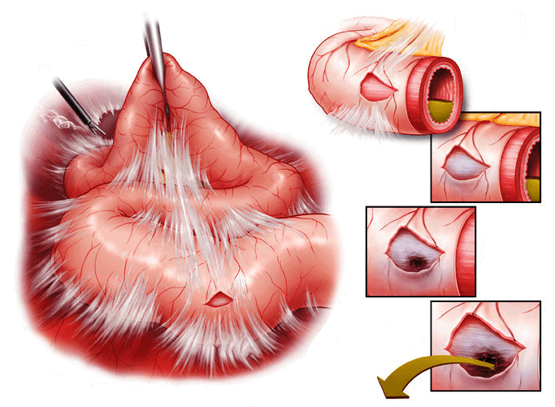
© Chẩn Đoán Hình Ảnh Xray.vn
II. Chẩn đoán x-quang
* Chụp bụng đứng thẳng
– Đặc điểm hình ảnh:
+ Ở tư thế đứng, khí tự do tập trung dưới vòm hoành, tạo dải sáng hình liềm; bên phải, liềm khí nằm giữa gan và cơ hoành, bên trái có thể nằm giữa đáy vị và cơ hoành.
+ Liềm hơi có thể xuất hiện dưới một hoặc cả hai vòm hoành, với bờ rõ.
+ Hình ảnh bên phải thường dễ nhận biết hơn nhờ tương phản với gan; bên trái có thể chồng lấp bóng hơi dạ dày.
+ Có thể thấy liềm hơi khi lượng khí khoảng 20–50 mL; hình ảnh có thể rõ hơn sau khoảng 6–8 giờ kể từ thủng.


– Ở người bệnh xơ gan, bờ dưới liềm hơi có thể không đều do bề mặt gan gồ ghề.
=> Case lâm sàng 1:
+ Khi lượng khí ít, dải sáng có thể mảnh như sợi tóc; khi lượng khí tăng, dải sáng có thể rộng hơn và có dạng liềm.
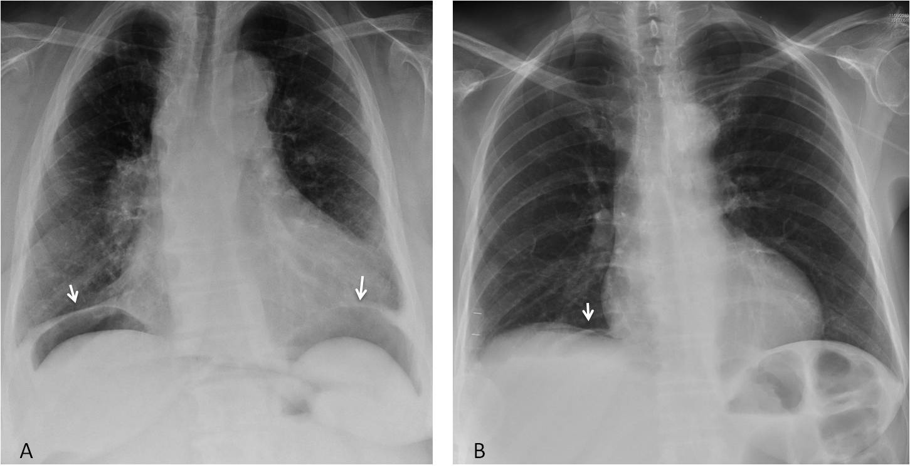
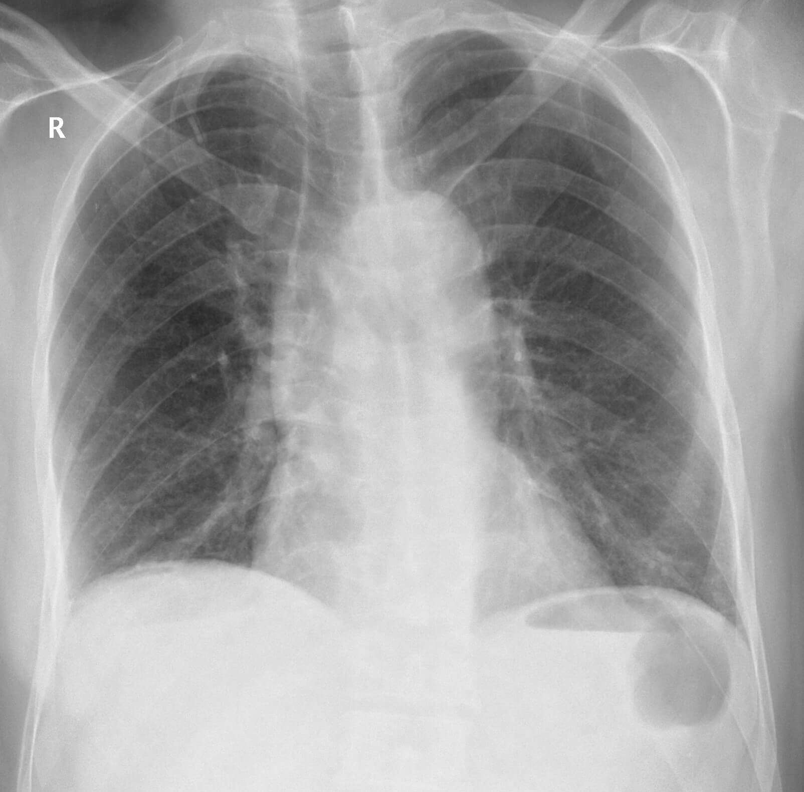
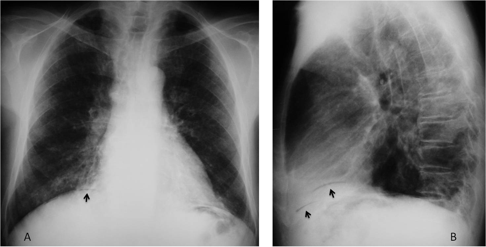
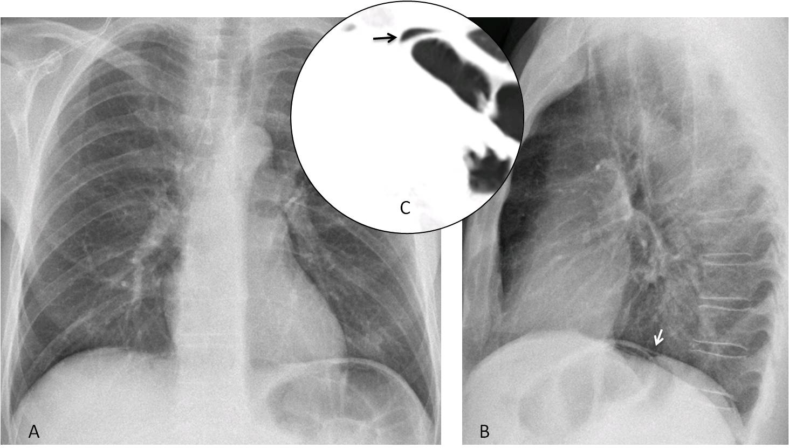
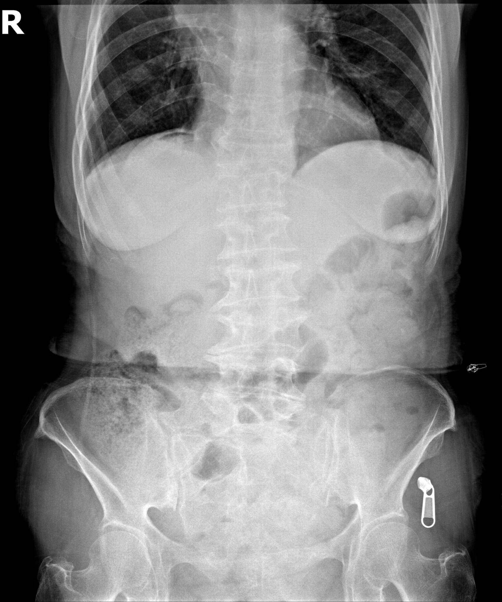
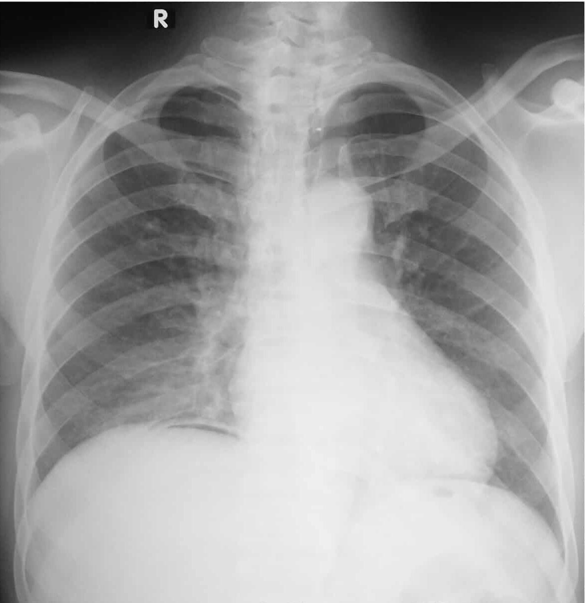
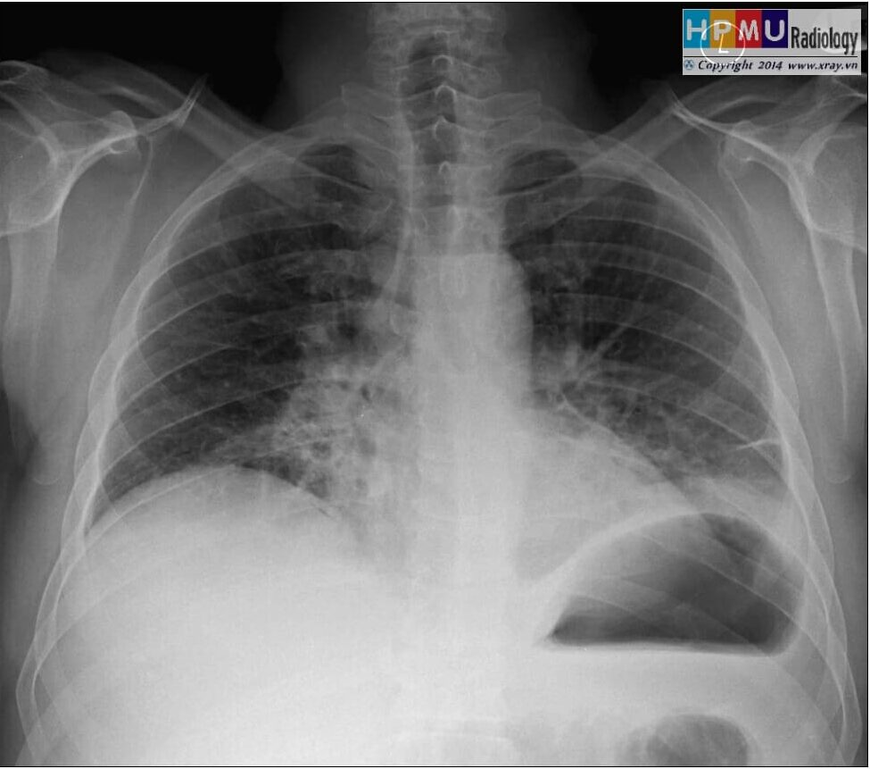
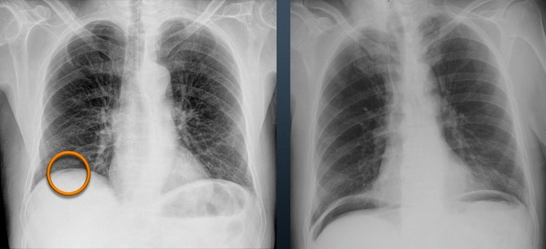
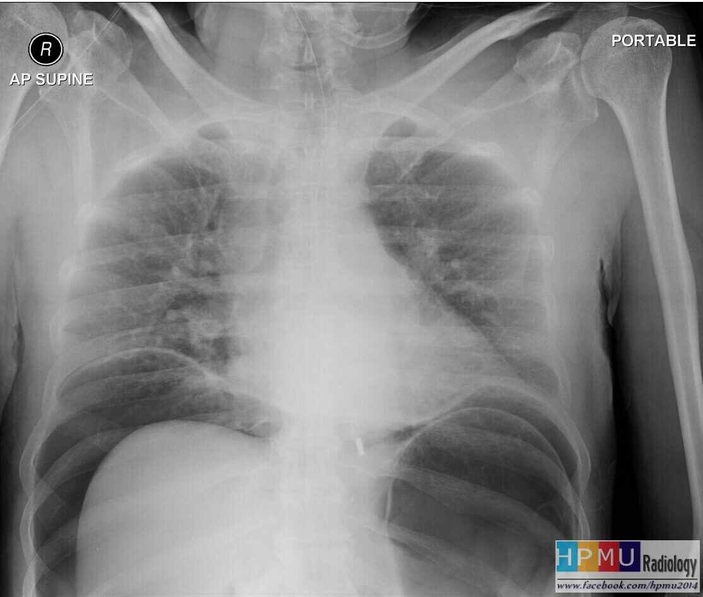
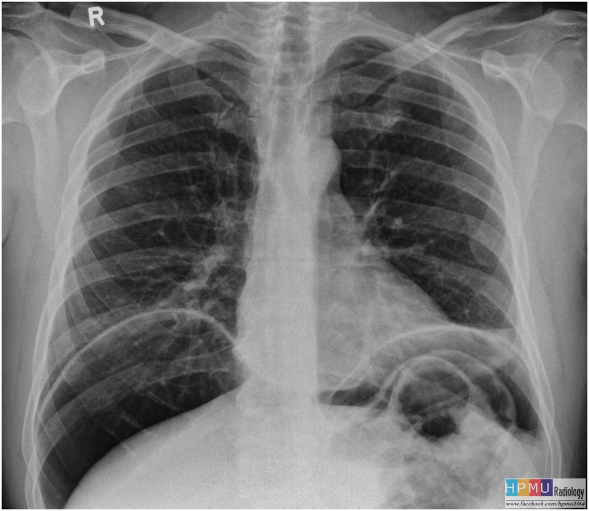
=> Case lâm sàng 1:
– Dấu hiệu vòm hoành liên tục (continuous diaphragm sign):
+ Trong tràn khí phúc mạc lượng nhiều, khí dưới cơ hoành tạo dải sáng liên tục từ vòm hoành phải sang trái.
+ Nếu khí nằm phía trên cơ hoành và làm rõ phần cơ hoành thường bị bóng tim che khuất, cần phân biệt tràn khí trung thất hoặc tràn khí màng tim.
– Mức khí–dịch trong ổ phúc mạc:
+ Khi thủng tạng làm khí và dịch thoát vào phúc mạc với lượng nhiều, phim đứng có thể thấy các mức khí–dịch ngoài lòng ruột.
+ Dính do viêm phúc mạc có thể khu trú khí và dịch, tạo các mức khí–dịch khu trú.
+ Cần xác định mức khí–dịch nằm ngoài lòng quai ruột để tránh nhầm với các mức trong lòng ruột.


– Tràn khí phúc mạc lượng lớn có thể đẩy cao hai vòm hoành:
+ Khi áp lực ổ bụng tăng, đặc biệt trong thể tràn khí phúc mạc áp lực, cơ hoành bị đẩy lên, làm giảm thể tích lồng ngực và thể tích phổi.
+ Trên phim ngực có thể thấy hai vòm hoành cao, phổi giảm nở; trường hợp nặng có thể kèm khó thông khí hoặc suy hô hấp.
+ Vòm hoành cao không đặc hiệu; cần đối chiếu với các dấu hiệu khí tự do trong ổ phúc mạc, tình trạng bụng chướng và lâm sàng.
– Khí tự do dưới vòm hoành trái có thể tạo vùng sáng hình tam giác trong khoang dưới hoành, giữa vòm hoành, đáy vị và góc đại tràng trái (góc lách).
– Cạm bẫy: Khi có tổn thương phối hợp, liềm hơi mảnh dưới hoành có thể bị bỏ sót; cần chủ động rà soát hai vòm hoành trên phim đứng.
– Không thấy liềm hơi dưới hoành:
+ Phim X-quang bụng có thể không biểu hiện khí tự do khi lượng khí ít.
+ Chụp sớm sau thủng có thể chưa thấy khí tích tụ dưới hoành.
+ Thủng tạng sau phúc mạc làm khí khu trú trong khoang sau phúc mạc, không tạo liềm hơi trong ổ phúc mạc.
+ Thủng vào túi mạc nối (hậu cung mạc nối) khi lỗ mạc nối (lỗ Winslow) bị bít có thể làm khí khu trú trong túi này.
+ Thủng mặt sau dạ dày hoặc hành tá tràng có thể được mô lân cận khu trú, hạn chế khí thoát vào khoang phúc mạc chung.
+ Lỗ thủng có thể tạm thời bịt bởi giả mạc hoặc niêm mạc phù nề, nhất là ở ruột non.
=> Case lâm sàng 1:
* Chụp bụng đứng nghiêng
– Đặc điểm hình ảnh:
+ Khí tự do dâng lên vùng dưới hoành, tạo vùng thấu quang ngoài lòng ống tiêu hóa.
+ Phim âm tính không loại trừ tràn khí phúc mạc, nhất là khi lượng khí ít.
=> Case lâm sàng 1:
=> Case lâm sàng 2:
* Chụp nằm tia đi ngang
– Tư thế nằm ngửa hoặc nằm nghiêng trái, tia X đi ngang.


– Có thể thực hiện theo hai tư thế:
+ Nằm ngửa, chụp nghiêng với tia ngang: khí tự do có thể tụ phía trước ổ bụng, giữa thành bụng trước và các quai ruột.
+ Nằm nghiêng trái, chụp thẳng trước–sau với tia ngang: khí tự do dồn lên phía phải, có thể tạo dải thấu quang giữa gan và thành bụng phải.


=> Case lâm sàng 1:

* Chụp bụng nằm ngửa
– Kỹ thuật: Người bệnh nằm ngửa, chụp thẳng trước–sau; tia trung tâm vuông góc với mặt phim.


– Đặc điểm hình ảnh:
+ Trên phim bụng nằm ngửa, khí tự do dồn ra phía trước, nằm giữa mặt trước gan và thành bụng trước; lớp khí này làm bóng gan tăng thấu quang, giảm độ cản quang (dấu hiệu gan sáng; lucent liver sign).
+ Đây là hiệu ứng chồng hình của khí ngoài nhu mô gan, không phải tổn thương làm giảm đậm độ nhu mô gan.
+ Phân biệt với hơi trong dạ dày hoặc đại tràng chiếu chồng lên gan bằng cách xác định khí có nằm trong một quai tạng hay ở ngoài lòng tạng; tìm thêm các dấu hiệu khí tự do khác.
=> Case lâm sàng 1:
=> Case lâm sàng 2:
– Dấu hiệu túi Morison (Doge’s cap sign):
+ Cơ chế: Khí tự do khu trú trong ngách gan-thận phải, giữa mặt sau gan và mặt trước thận phải, tạo tương phản với các mô mềm lân cận.
+ Đặc điểm hình ảnh: Trên phim bụng nằm ngửa, thấy vùng thấu quang ở hạ sườn phải, dưới xương sườn XI và trên cực trên thận phải. Hình tam giác là điển hình; đôi khi vùng khí có dạng liềm hoặc bán nguyệt.
+ Hình thái bờ: Bờ ngoài có thể lõm theo đường viền gan.
+ Phân biệt với dấu hiệu bờ gan (hepatic edge sign): Dấu hiệu bờ gan là ổ khí thuôn dài, hình đĩa hoặc điếu xì gà ở khoang dưới gan, có trục dài chếch lên-trong theo đường viền gan; dấu Doge khu trú trong ngách Morison và thường có dạng tam giác.
– Dấu hiệu cá heo nhảy (leaping dolphin sign):
+ Cơ chế: Khí tự do ở khoang dưới hoành phải viền mặt dưới các bó cơ sườn của cơ hoành, tạo tương phản giúp các bó cơ hiện rõ trên phim.
+ Đặc điểm hình ảnh: Trên phim bụng nằm ngửa, có thể thấy 2–3 bờ cong hoặc dải mờ trơn ở hạ sườn phải; các dải hướng dọc, gần song song với vòm hoành và hội tụ về phía trên-trong, gợi hình cá heo đang nhảy.
+ Đối chiếu CT: Các dải này tương ứng với bó cơ sườn của cơ hoành; trên CT có thể thấy chúng như các dải cơ hoặc tam giác nhỏ ở ngoại vi, áp sát phúc mạc thành.
– Dấu hiệu bóng bầu dục (football sign):
+ Trên phim bụng nằm ngửa, tràn khí phúc mạc lượng lớn làm căng giãn khoang phúc mạc, tạo vùng thấu quang lớn hình bầu dục, trục dài theo hướng đầu–chân; hai đầu vùng sáng tương ứng với cơ hoành và sàn chậu.
+ Nếu khí viền quanh dây chằng liềm, dây chằng hiện thành dải mờ dọc trong vùng thấu quang, gợi hình dây buộc của quả bóng.
+ Dấu hiệu thường gặp hơn ở trẻ sơ sinh và trẻ nhỏ do lượng khí lớn so với kích thước ổ bụng; cũng có thể gặp ở người lớn.


– Dấu hiệu Rigler (dấu hiệu thành ruột kép; double-wall sign):
+ Cơ chế: Khí trong lòng ruột tạo tương phản ở mặt trong thành ruột. Bình thường, mặt ngoài thành ruột thường không tách biệt rõ với mô mềm xung quanh; khi có khí tự do trong ổ phúc mạc, mặt ngoài cũng được viền khí, làm hiện rõ đồng thời hai bờ.
+ Hình ảnh: Trên phim bụng nằm ngửa, thấy cả bờ trong và bờ ngoài của quai ruột chứa khí. Dấu hiệu thường rõ khi lượng khí đủ để phân tách các quai ruột.
+ Giả dấu Rigler: Hai quai ruột giãn chứa khí áp sát nhau có thể làm nổi bật các bờ ruột tiếp giáp, giả hình ảnh thành ruột kép dù không có khí tự do. Cần tìm khí ngoài lòng ruột ở các vị trí khác và đối chiếu với những dấu hiệu phối hợp.


=> Case lâm sàng 1:
– Dấu hiệu tam giác (triangle sign):
+ Cơ chế: Khí tự do lọt vào khoảng phúc mạc giữa ba quai ruột liền kề, hoặc giữa hai quai ruột và phúc mạc thành, tạo ổ khí hình tam giác.
+ Đặc điểm hình ảnh: Trên phim bụng nằm ngửa, đặc biệt phim nghiêng tia ngang, thấy ổ thấu quang nhỏ hình tam giác nằm ngoài lòng ruột; khi bị giới hạn bởi ba quai ruột, hình ảnh này còn được gọi là dấu hiệu tam giác báo động (telltale triangle sign).
+ Cạm bẫy: Phân biệt ổ khí tự do với hơi trong lòng ruột bằng cách xác định mối liên hệ của vùng sáng với thành và lòng các quai ruột.
– Dấu hiệu dây chằng liềm (falciform ligament sign; Silver sign):
+ Cơ chế: Trên phim bụng nằm ngửa, khí tự do ở phía trước gan viền quanh dây chằng liềm; tương phản với khí giúp thấy rõ cấu trúc vốn khó phân biệt với mô mềm lân cận.
+ Đặc điểm hình ảnh: Dây chằng hiện thành dải mờ mảnh, dài, thường hướng dọc ở vùng bụng trên phải, chiếu trên mặt trước gan và có thể nằm cạnh cột sống; dấu hiệu rõ hơn khi khí viền đủ rộng quanh dây chằng.
+ Ý nghĩa: Hỗ trợ nhận biết tràn khí phúc mạc trên phim nằm ngửa; không thấy dấu này không loại trừ tràn khí.
– Dây chằng tròn của gan: Đây là cấu trúc riêng nằm trong bờ tự do của dây chằng liềm và hướng về rốn. Khí tự do cũng có thể viền làm dây chằng tròn hiện rõ, nhưng không đồng nhất hình ảnh này với dấu hiệu dây chằng liềm.


– Dấu hiệu chữ V ngược (inverted V sign):
+ Cơ chế: Khí tự do bao quanh các nếp và cấu trúc mạch vùng rốn, tạo tương phản làm chúng hiện thành các dải mờ; hình chữ V là bóng của các cấu trúc này, không phải một ổ khí hình chữ V.
+ Đặc điểm hình ảnh: Trên phim bụng nằm ngửa, hai dải mờ ở vùng chậu xuất phát gần rốn rồi chạy xuống dưới và ra ngoài, tạo hình chữ V ngược.
+ Cấu trúc tạo hình có thể khác theo tuổi: ở trẻ nhỏ có thể là động mạch rốn; ở người lớn thường được quy cho các động mạch thượng vị dưới, nằm trong nếp rốn ngoài.
* Chụp phổi # Bụng đứng
– So sánh khả năng phát hiện:
+ Phim ngực thẳng tư thế đứng thường nhạy hơn phim bụng đứng khi lượng khí tự do dưới hoành ít.
+ Trên phim bụng đứng, tia trung tâm đặt thấp; vùng khí mỏng dưới hoành có thể chồng lên bóng gan nên khó nhận ra.
+ Trên phim ngực đứng, tia trung tâm đặt cao hơn, giúp vùng khí dưới hoành hiện trong khoảng sáng ngay phía trên bóng gan và dễ quan sát hơn.
* Chẩn đoán phân biệt
– Bóng hơi dạ dày:
+ Khi dạ dày chứa nhiều dịch hoặc thức ăn, khí trong đáy vị dồn lên cao; trên phim đứng, bóng khí này đôi khi có dạng liềm dưới vòm hoành trái và mô phỏng khí tự do.
+ Gợi ý bóng hơi dạ dày: nằm dưới vòm hoành trái, thường tròn hoặc bầu dục; có thể thấy mức hơi–dịch, thức ăn và bờ thành dạ dày dày ngăn cách với đáy phổi.
+ Khí tự do nằm ngoài lòng dạ dày, tạo liềm thấu quang sát vòm hoành và không được bao bởi thành dạ dày. Bờ tiếp xúc với thức ăn có thể không đều, nhưng không nên dùng độ rõ của bờ dưới làm tiêu chí phân biệt duy nhất.
– Dấu hiệu Chilaiditi:
+ Một quai đại tràng (hiếm hơn là ruột non) nằm xen giữa mặt trên gan và cơ hoành phải; quai ruột có thể làm vòm hoành phải cao hơn.
+ Khí vẫn nằm trong lòng ruột, thường nhận ra được thành ruột hoặc các nếp haustra bao quanh. Đây là điểm giúp phân biệt với khí tự do ngoài lòng ống tiêu hóa, vốn không có các nếp này.
+ Chỉ gọi là hội chứng Chilaiditi khi hình ảnh này đi kèm triệu chứng lâm sàng; nếu phát hiện tình cờ và không triệu chứng, gọi là dấu hiệu Chilaiditi.

=> Case lâm sàng 1:
– Sau cắt gan phải:
+ Khoang trống sau cắt gan có thể khiến góc đại tràng phải (góc gan) di chuyển lên cao, áp sát vòm hoành phải. Bóng khí khi đó vẫn nằm trong lòng đại tràng.
+ Tìm thành ruột, các nếp haustra và sự liên tục của quai đại tràng để nhận diện khí trong lòng ruột; khí tự do không được bao quanh bởi thành ruột hay các nếp haustra.
+ Bờ bóng khí trong đại tràng có thể kém rõ do chồng lấp, nhưng độ rõ của bờ đơn thuần không đủ để phân biệt.
– Áp xe dưới hoành:
+ Là ổ nhiễm trùng, tụ mủ khu trú giữa cơ hoành và các tạng bụng lân cận.
+ Nguyên nhân có thể gồm thủng tạng rỗng, viêm tụy, viêm túi mật, áp xe gan, chấn thương hoặc biến chứng sau phẫu thuật; trường hợp không rõ nguyên nhân ít gặp.
+ Có thể nằm dưới vòm hoành phải, thường giữa gan và cơ hoành, hoặc dưới vòm hoành trái, gần lách; bên phải thường gặp hơn.
+ Trên siêu âm hoặc CLVT, có thể thấy ổ dịch khu trú, đôi khi chứa khí. Trên X-quang, khí trong ổ có thể tạo bóng khí hoặc mức hơi–dịch khu trú; đôi khi kèm nâng vòm hoành cùng bên và tràn dịch màng phổi.
+ Hình ảnh khí khu trú trong ổ dịch khác với liềm khí tự do trong phúc mạc; nếu phim thường quy không phân biệt rõ, CLVT giúp xác định vị trí khí và ổ dịch.

=> Case lâm sàng 1:

=> Case lâm sàng 2:

– Áp xe gan:
+ Ổ áp xe có chứa khí có thể hiện thành các bóng khí không đều hoặc mức hơi–dịch trong vùng bóng gan; khí nằm trong một ổ khu trú ở nhu mô gan.
+ Khác với khí tự do thường tạo liềm thấu quang mỏng ngoài bờ gan, sát vòm hoành. Tuy nhiên, áp xe gan dưới bao có thể nằm sát vòm hoành.
+ Khi chưa xác định rõ khí nằm trong nhu mô gan hay ngoài phúc mạc, cần dựa vào hình ảnh ổ dịch và thành ổ trên siêu âm hoặc CLVT.


– Mỡ quanh gan:
+ Dải mỡ kế cận bờ gan có thể tạo vùng thấu quang giả khí dưới hoành; trên phim thường quy, mỡ thường kém đen hơn khí tự do.
+ Dải mỡ thường đi theo đường viền gan và không đổi vị trí theo trọng lực; khí tự do thường tạo liềm thấu quang rõ hơn và có thể dịch chuyển khi thay đổi tư thế.
– Đệm mỡ trước phúc mạc (properitoneal fat stripe):
+ Lớp mỡ ngoài phúc mạc có thể hiện thành dải thấu quang dọc bờ ngoài đại tràng lên và đại tràng xuống trên phim bụng; đây là mặt phẳng mỡ giải phẫu, không phải khí tự do.
+ Dải này thường có đường đi tương đối cố định dọc thành bụng bên, không tạo liềm dưới vòm hoành và không đổi vị trí theo tư thế như khí tự do.
=> Case lâm sàng 1:
=> Case lâm sàng 2:
– Ảnh giả do bờ dưới xương sườn:
+ Bờ dưới của xương sườn thấp, nhất là bên trái, đôi khi tạo dải thấu quang cong giống liềm khí dưới hoành.
+ Dải này đi theo đường cong của xương sườn và có thể truy liên tục về cung sườn; liềm khí tự do nằm trong khoang dưới hoành, thường song song với vòm hoành.
– Tràn khí màng phổi phải hoặc tràn khí màng phổi khu trú vùng đáy phổi:
+ Khí nằm trong khoang màng phổi, phía trên vòm hoành. Khi khu trú ở đáy phổi, túi khí có thể tạo vùng thấu quang giống liềm hơi dưới hoành.
+ Tìm đường màng phổi tạng và vùng ngoại vi không có mạch phổi; vòm hoành vẫn nằm dưới túi khí. Khí tự do trong ổ bụng nằm dưới cơ hoành và không tạo đường màng phổi.
+ Nếu phim thường quy chưa xác định được khí nằm trên hay dưới cơ hoành, cần đánh giá thêm bằng tư thế chụp khác hoặc CLVT.
– Giả dấu hiệu Rigler:
+ Hai quai ruột chứa khí nằm sát nhau có thể làm thành chung giữa chúng hiện rõ ở cả hai mặt, tạo hình ảnh giả thành ruột được viền khí hai bên.
+ Trong giả dấu, đường thành ruột nổi bật nằm giữa hai quai chứa khí; không thấy khí tự do viền mặt ngoài quai ruột. Dấu hiệu Rigler thật là thành của một quai được phân định cả mặt trong bởi khí trong lòng ruột lẫn mặt ngoài bởi khí tự do.
=> Case lâm sàng 1:
* Khí khoang sau phúc mạc
– Đặc điểm hình ảnh:
+ Khí lan dọc các khoang cân sau phúc mạc, có thể viền quanh tụy, động mạch chủ bụng, thận–tuyến thượng thận và cơ thắt lưng lớn.
+ Trên X-quang, khí có thể tạo các dải thấu quang dọc bờ thận hoặc cơ thắt lưng; trên CLVT, xác định rõ hơn vị trí và phạm vi lan theo các khoang.
+ Khí có thể liên quan các đoạn ống tiêu hóa nằm sau hoặc ngoài phúc mạc: phần lớn tá tràng, đại tràng lên, đại tràng xuống và phần trực tràng ngoài phúc mạc.
– Nguyên nhân:
+ Thủng tạng rỗng sau hoặc ngoài phúc mạc, như tá tràng, đại tràng lên, đại tràng xuống hoặc trực tràng ngoài phúc mạc.
+ Sau phẫu thuật cơ quan sau phúc mạc, như phẫu thuật hệ tiết niệu, tuyến thượng thận hoặc phẫu thuật cột sống theo đường tiếp cận phía trước.
+ Khí từ trung thất lan xuống qua các khe cân hoặc lỗ cơ hoành.
+ Nhiễm trùng hoặc hoại tử sinh khí, như hoại tử tụy nhiễm trùng, áp xe quanh thận hoặc áp xe cơ thắt lưng.
+ Sau thủ thuật, như sinh thiết qua da hoặc dẫn lưu khoang sau phúc mạc.


III. Chẩn đoán siêu âm
– Tư thế khảo sát:
+ Người bệnh nằm ngửa, nâng nhẹ phần thân trên khoảng 10–20° (xấp xỉ 15°); tư thế này giúp khí tự do tập trung ở vùng bụng trước, gần đầu dò.
– Vị trí đầu dò:
+ Bắt đầu với đầu dò đặt dọc vùng thượng vị cạnh đường giữa bên phải.
+ Đây là cửa sổ khảo sát khởi đầu, không phải vị trí duy nhất; nên khảo sát thêm hạ sườn phải và các vùng khác tùy phân bố khí, thể trạng và cửa sổ siêu âm.
+ Tìm dải phúc mạc tăng hồi âm kèm các phản âm lặp hoặc bóng bẩn che khuất cấu trúc sâu.
* Khí ổ bụng nhiều
– Vị trí và ảnh hưởng trên siêu âm:
+ Ở tư thế nằm ngửa, khí tự do thường tập trung ở phần trước ổ bụng; khi lượng nhiều hoặc thân trên được nâng nhẹ, khí có thể tụ dưới vòm hoành, giữa cơ hoành và mặt trước gan, thường dễ khảo sát ở vùng gan phải.
+ Khí nằm trước gan làm tăng hồi âm ở đường phúc mạc, gây các phản âm lặp hoặc bóng bẩn và che khuất nhu mô gan sâu phía sau.
– Đè ép đầu dò: Đè nhẹ có thể đẩy khí tự do di động ra khỏi đường truyền âm, làm các phản âm do khí giảm hoặc mất; khi nhả đầu dò, chúng có thể xuất hiện lại hoặc dịch chuyển.
=> Case lâm sàng 1:
=> Videos khí tự do:
– Dấu hiệu bức màn (curtain sign):
+ Ở vùng gan phải, phần phổi thông khí tại góc sườn-hoành tạo bờ “màn phổi”, di chuyển xuống khi hít vào và lên khi thở ra.
+ Khí tự do trước gan tạo một dải phản âm và các ảnh giả phía sau. Phản xạ này tương đối đứng yên theo nhịp thở, nhưng có thể dịch chuyển khi thay đổi tư thế người bệnh.
+ Khi hít vào, bờ phổi có thể chồng lên phản xạ khí trước gan; khi thở ra, hai hình ảnh tách nhau, tạo bậc giữa khí ở góc sườn-hoành và khí ổ bụng.
* Chẩn đoán phân biệt:
– Bức màn phổi và phản xạ khí tự do ổ bụng:
+ Bức màn phổi do phần phổi thông khí ở góc sườn-hoành tạo ra; nằm phía trên cơ hoành, có thể thấy bên phải hoặc bên trái, và di chuyển theo nhịp thở.
+ Phản xạ khí tự do trong ổ bụng nằm dưới cơ hoành, thường ở phía trước gan; tương đối ít di động theo nhịp thở nhưng có thể dịch chuyển khi thay đổi tư thế người bệnh.
+ Quan sát sự chồng lấp khi hít vào và tách rời khi thở ra giúp xác định hai hình ảnh thuộc hai khoang khác nhau.
– Tràn khí dưới da:
+ Khí nằm nông trong mô dưới da hoặc thành bụng, phía ngoài lớp cơ–mạc; trên siêu âm có thể tạo các chấm tăng âm, phản âm lặp và bóng bẩn ở phần nông, che khuất cấu trúc sâu.
+ Khác với khí tự do trong phúc mạc, vốn nằm sâu hơn thành bụng, sát đường phúc mạc và có thể ở trước gan.
+ Xác định lớp giải phẫu nơi các ảnh giả bắt đầu; không phân biệt chỉ bằng khoảng cách tới gan.
– Dấu hiệu Chilaiditi:
+ Góc đại tràng phải (góc gan) nằm xen giữa gan và vòm hoành phải; khí gây ảnh giả vẫn nằm trong lòng đại tràng.
+ Trên siêu âm, tìm thành ruột, các nếp haustra và tính liên tục của quai đại tràng để phân biệt với khí tự do trong phúc mạc, vốn nằm ngoài lòng ruột và có thể làm tăng hồi âm đường phúc mạc.
– Khí đường mật (pneumobilia):
+ Khí nằm trong lòng đường mật trong gan, có thể hiện thành các chấm hoặc dải tăng âm kèm phản âm lặp/bóng bẩn; thường phân nhánh và hướng về rốn gan.
+ Khác với khí tự do trong phúc mạc, vốn nằm ngoài gan, thường ở trước gan hoặc dưới cơ hoành và không đi theo các nhánh đường mật.
+ Khí đường mật có thể gặp sau can thiệp đường mật, đặt stent hoặc nối mật–ruột; nếu không có tiền sử này, cần tìm nguyên nhân bệnh lý. Khí trong đường mật thường ở trung tâm gan, khác với khí tĩnh mạch cửa thường lan ra ngoại vi.
* Khí số lượng ít
– Vị trí khảo sát:
+ Khí ít có thể khu trú gần vị trí thủng: dưới gan, chẳng hạn sau thủng mặt trước ổ loét dạ dày–tá tràng; hoặc trong hậu cung mạc nối khi thủng mặt sau.
+ Khảo sát có định hướng tại giường túi mật, mặt dưới gan, dọc bờ cong nhỏ dạ dày và quanh vị trí nghi thủng; đánh giá hậu cung mạc nối khi phù hợp với vị trí tổn thương.
– Hình ảnh siêu âm:
+ Có thể thấy các chấm hoặc đốm tăng âm nằm ngoài lòng ống tiêu hóa, đôi khi kèm phản âm lặp và bóng cản âm bẩn phía sau.
+ Với lượng khí rất ít hoặc khi dùng đầu dò tần số thấp, các phản âm lặp và bóng cản âm bẩn có thể không rõ; đầu dò tần số cao giúp khảo sát tốt hơn vùng nông.
=> Case lâm sàng 1:
=> Case lâm sàng 2:
=> Case lâm sàng 2:
* Dịch khí phối hợp
– Dịch tự do có thể đọng ở các ngách phúc mạc thấp và khoang giữa các quai ruột, như túi cùng chậu, khoang gan–thận hoặc quanh lách.
– Dịch có thể không đồng nhất, với các hồi âm lợn cợn bên trong; đặc điểm này gợi ý dịch có thành phần cặn, nhưng không đặc hiệu cho thủng tạng.
– Có thể thấy các chấm tăng âm hoặc bọt khí nhỏ trong dịch, đôi khi kèm phản âm lặp/bóng cản âm bẩn; các bọt khí có thể di động khi thay đổi tư thế.
=> Case lâm sàng 1:
* Chẩn đoán nguyên nhân
– Dấu hiệu trực tiếp gợi ý vị trí thủng: Gián đoạn khu trú thành ống tiêu hóa hoặc các bóng khí ngoài lòng ruột nằm sát đoạn nghi thủng.
– Dấu hiệu gián tiếp:
+ Khí tự do và/hoặc dịch tự do trong ổ phúc mạc; các dấu hiệu này gợi ý biến chứng nhưng không tự xác định được vị trí thủng.
+ Dày thành quai ruột khu trú, giảm nhu động, thâm nhiễm mỡ lân cận hoặc ổ dịch khu trú có thể hỗ trợ xác định nguyên nhân.
IV. Chẩn đoán CLVT
* Xác định khí tự do
– CLVT có giá trị cao trong phát hiện khí tự do trong ổ bụng.
– Khí tự do có thể tạo các bóng khí nhỏ ở những vị trí không phụ thuộc, như mặt trước hoặc mặt dưới gan, khoang dưới hoành, vùng rốn gan, rãnh dây chằng tròn, túi mạc nối và quanh các quai ruột.
– Các bóng khí khu trú trong mỡ mạc treo, sát một quai ruột, có thể giúp định vị đoạn ruột bị tổn thương. Cần đối chiếu thêm với dấu hiệu gián đoạn thành ruột, dày thành khu trú, thâm nhiễm mỡ hoặc dịch lân cận.
– Khi lượng khí rất ít, rà soát lát cắt mỏng ở nhiều mặt phẳng;
– Cửa sổ phổi:
+ Khí tự do, nhất là các bóng khí nhỏ, thường dễ nhận ra hơn trên cửa sổ phổi vì vùng khí tương phản rõ với các mô mềm xung quanh.
+ Đối chiếu thêm cửa sổ mô mềm để đánh giá thành ruột, các tạng và vị trí chính xác của khí.
* Xác định nguyên nhân
– Dấu hiệu quanh vị trí thủng:
+ Cụm khí ngoài lòng ruột, dịch khu trú và thâm nhiễm mỡ mạc treo sát một đoạn ruột có thể giúp định vị vị trí tổn thương.
+ Thành ruột tại chỗ có thể dày, phù nề hoặc tăng quang; đôi khi thấy rõ điểm gián đoạn thành ruột. Nếu có sử dụng thuốc cản quang đường tiêu hóa, thuốc thoát ra ngoài lòng ruột là dấu hiệu trực tiếp.
+ Mức độ thấy rõ các dấu hiệu thay đổi; không thấy điểm gián đoạn thành ruột không loại trừ thủng.
=> Case lâm sàng 1:
=> Case lâm sàng 2:
– Thủng ổ loét dạ dày–tá tràng:
+ CLVT có thể thấy ổ loét hoặc khuyết khu trú thành dạ dày–tá tràng; đôi khi nhận ra gián đoạn lớp niêm mạc hoặc toàn bộ thành.
+ Dấu hiệu quanh vị trí thủng gồm khí ngoài lòng ống tiêu hóa, dịch khu trú và thâm nhiễm mỡ lân cận; thành dạ dày hoặc tá tràng có thể dày, phù nề.
=> Case lâm sàng 1:


=> Case lâm sàng 2:


=> Case lâm sàng 3:


=> Case lâm sàng 4:

=> Case lâm sàng 5:


=> Case lâm sàng 6:


=> Case lâm sàng 7:


=> Case lâm sàng 8:


=> Case lâm sàng 9:

=> Case lâm sàng 10: thủng hành tá tràng


=> Case lâm sàng 11: thủng hành tá tràng


=> Case lâm sàng 12:
=> Case lâm sàng 13: thủng trực tràng
– Thủng ruột do dị vật:
+ Dị vật nhọn như xương cá hoặc tăm xỉa răng có thể nhỏ, mảnh và khó thấy trực tiếp trên CLVT; cần tìm vật thể xuyên thành ruột trên các mặt phẳng tái tạo.
+ Dấu hiệu gián tiếp gồm dày phù nề khu trú thành ruột, thâm nhiễm mỡ và ít dịch quanh vị trí tổn thương; có thể không thấy rõ điểm gián đoạn thành ruột.
+ Bóng khí tự do có thể rất ít hoặc không thấy nếu lỗ thủng được khu trú.
=> Case lâm sàng 1:
=> Case lâm sàng 2:
=> Case lâm sàng 3:
=> Case lâm sàng 4:
=> Case lâm sàng 5:
=> Case lâm sàng 6:
=> Case lâm sàng 7:
=> Case lâm sàng 8:
=> Case lâm sàng 9:
=> Case lâm sàng 10:
=> Case lâm sàng 11:
=> Case lâm sàng 12:
=> Case lâm sàng 13:
=> Case lâm sàng 14:
=> Case lâm sàng 15:
=> Case lâm sàng 16:
– Vết thương thấu bụng:
+ Trên CLVT, đánh giá đường đi của vết thương và dị vật; tìm khí ngoài lòng ruột, tổn thương thành ruột hoặc mạc treo nằm trên đường đi hay sát đường đi của vết thương.
+ Các dấu hiệu phối hợp gồm dày hoặc giảm bắt thuốc thành ruột khu trú, thâm nhiễm mỡ mạc treo, tụ máu và dịch tự do.
+ Lượng khí tự do có thể ít hoặc không thấy dù có tổn thương tạng rỗng; ngược lại, khí có thể lọt qua vết thương vào ổ bụng mà không kèm thủng ruột.
=> Case lâm sàng 1:
– Khối u ống tiêu hóa biến chứng thủng:
+ CLVT có thể thấy khối hoặc đoạn thành ruột dày không đối xứng, bờ không đều, hẹp lòng ruột hoặc hoại tử; các dấu hiệu này gợi ý tổn thương u.
+ Dấu hiệu thủng gồm khuyết thành ruột và cụm khí ngoài lòng ruột sát khối, có thể kèm dịch khu trú, áp xe hoặc thâm nhiễm mỡ. Thủng có thể được khu trú nên lượng khí tự do ít.
+ Hạch vùng hoặc tổn thương phúc mạc đi kèm có thể hỗ trợ đánh giá nguyên nhân u và mức độ lan rộng.
=> Dấu hiệu viêm phúc mạc:
+ Phúc mạc có thể dày và tăng quang sau tiêm thuốc cản quang, khu trú hoặc lan tỏa.
+ Có thể kèm thâm nhiễm mỡ mạc treo/mạc nối, dịch tự do hoặc ổ dịch khu trú; các dấu hiệu quanh một quai ruột giúp định hướng nguồn viêm.
=> Case lâm sàng 1: VRT thủng
V. Phân biệt trên CLVT
* Khí thành bụng
– Khí nằm ngoài khoang phúc mạc, có thể ở mô dưới da, các lớp cân–cơ hoặc khoang ngoài phúc mạc giữa thành bụng và phúc mạc thành; đôi khi thấy sát cung sườn.
– Trên CLVT, khí đi theo các mặt phẳng của thành bụng và được ngăn với khoang phúc mạc bởi phúc mạc thành còn nguyên. Khí tự do trong phúc mạc nằm phía trong phúc mạc thành, có thể bao quanh hoặc viền các tạng.
=> Case lâm sàng 1:
=> Case lâm sàng 2:
=> Case lâm sàng 3:
=> Case lâm sàng 4:
* Khí lồng ngực
– Xác định vị trí cơ hoành trên các lát cắt đứng dọc và đứng ngang:
+ Khí tự do trong phúc mạc nằm phía dưới cơ hoành, thường ở trước gan hoặc quanh các tạng bụng.
+ Khí màng phổi nằm phía trên cơ hoành, trong khoang màng phổi; có thể thấy đường màng phổi tạng và phổi co về phía rốn phổi.
=> Case lâm sàng 1:
=> Case lâm sàng 2:
* Khí khoang trước phúc mạc
– Khoang mỡ trước phúc mạc nằm ngoài khoang phúc mạc, giữa phúc mạc thành và mạc ngang; chứa mô mỡ.
– Ở phía ngoài, khoang này liên tục với khoang cạnh thận sau; lớp mỡ có thể dày lên thành đệm mỡ trước phúc mạc. Phía dưới, khoang liên tục với phần mở rộng vùng chậu của khoang cạnh thận sau.
– Khí trong khoang này nằm ngoài phúc mạc thành và có thể lan dọc các mặt phẳng mỡ, cân. Trên CLVT, cần lần theo vị trí khí so với phúc mạc thành để phân biệt với khí tự do trong ổ phúc mạc.
* Khí khoang sau phúc mạc
– Trên CLVT, khí nằm phía sau phúc mạc thành và thường lan dọc các khoang cân; tùy khoang, khí có thể viền quanh tụy, động mạch chủ bụng, thận–tuyến thượng thận hoặc cơ thắt lưng lớn.
– Khí có thể liên quan các đoạn ống tiêu hóa nằm sau hoặc ngoài phúc mạc: phần lớn tá tràng, đại tràng lên, đại tràng xuống và phần trực tràng ngoài phúc mạc.
– Phân bố khí theo các khoang giải phẫu giúp phân biệt với khí tự do trong ổ phúc mạc; hai loại khí có thể cùng hiện diện.
=> Case lâm sàng 1:


* Khí tĩnh mạch cửa
– Khí khu trú ngoài gan trong dây chằng gan–dạ dày có thể nhầm với khí đường mật hoặc khí tĩnh mạch cửa; cần xác định khí nằm trong hay ngoài nhu mô gan.
– Khí tĩnh mạch cửa thường tạo các nhánh khí phân bố ra ngoại vi gan; khí đường mật thường nằm trung tâm, gần rốn gan và đi theo các nhánh đường mật.
– Khí tự do trong dây chằng gan–dạ dày nằm ngoài gan, không tạo hình ảnh phân nhánh trong nhu mô như khí tĩnh mạch cửa và không đi theo đường mật.


Tài liệu tham khảo
* Imaging Patients with Acute Abdominal Pain – Jaap Stoker, MD, Adrienne van Randen, MD, Wytze Laméris
* Sonography of Small Bowel Perforation – Siarhei Kuzmich, Christopher J. Burke
* Bowel and mesenteric trauma. Beyond the pneumoperitoneum – M. I. carvajal, J. Cano, A. T. suarez
* Pneumoperitoneum as a sign of complications of invasive abdominal procedures – CT findings: five case reports – S. Kristic, A. Sofic, S. Hasanovic
* Thoracic causes of pneumoperitoneum – it is not all about perforation – E. Ilieva; Sofia/BG
* Pneumoperitoneum dissemination pathways. A comprehensive review from an anatomical point of view – J. J. Gómez Herrera, J. Sánchez Hernández, J. Calatayud Moscoso Del Prado
* Signs of pneumoperitoneum on supine abdominal film: Every lucency in the abdomen must be interpreted – A. Pinto, M. Scaglione, A. Sparano, C. Muzj
* Approach to the imaging of abnormal intra-abdominal gas – C. Zhang, A. Harris; Vancouver/CA, Vancouver, BC/CA
* About ectopic gas – M. A. C. Udaondo, B. Toribio Calvo, E. Núñez Miguel
* Imaging findings of the post-surgical abdomen: radiological pearls – J. J. Delgado Moraleda, P. Estelles Lerga, J. Salvador García
* Ectopic abdominopelvic gas in adults: diagnostic pearls and errors – M. C. Pulido Rozo, M. Martí De Gracia, A. Díez Tascón
* The Peritoneum: Anatomy & pathological processes – E. djmel1, M. Jrad, L. ben temellist, R. zrelly
* Abdominal air… is it in the right or in the wrong place? – M. Drake Perez, M. Diez Blanco, E. Lopez Uzquiza
* Perforated abdominal organ in everyday practice – C. Aydın Kızılkum; Ankara/TR
* Perforated Pyloroduodenal Peptic Ulcer and Sonography – Siarhei Kuzmich, Chris J. Harvey, Daniel T. M. Fascia